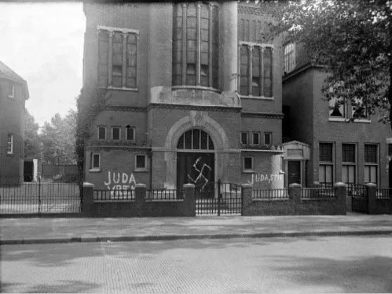
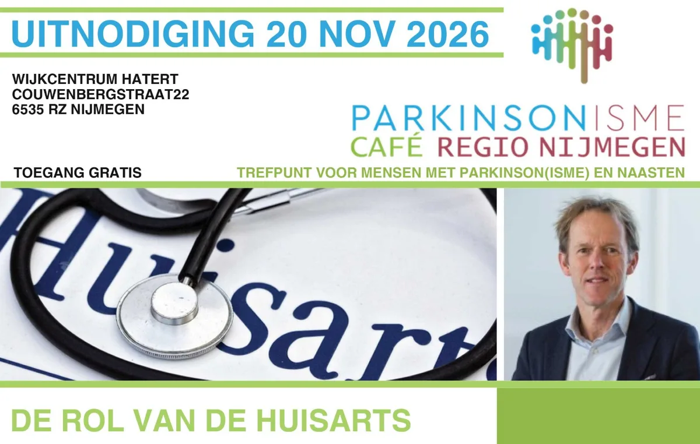
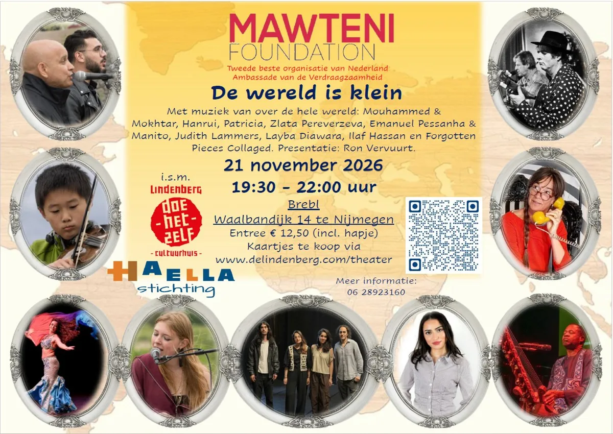
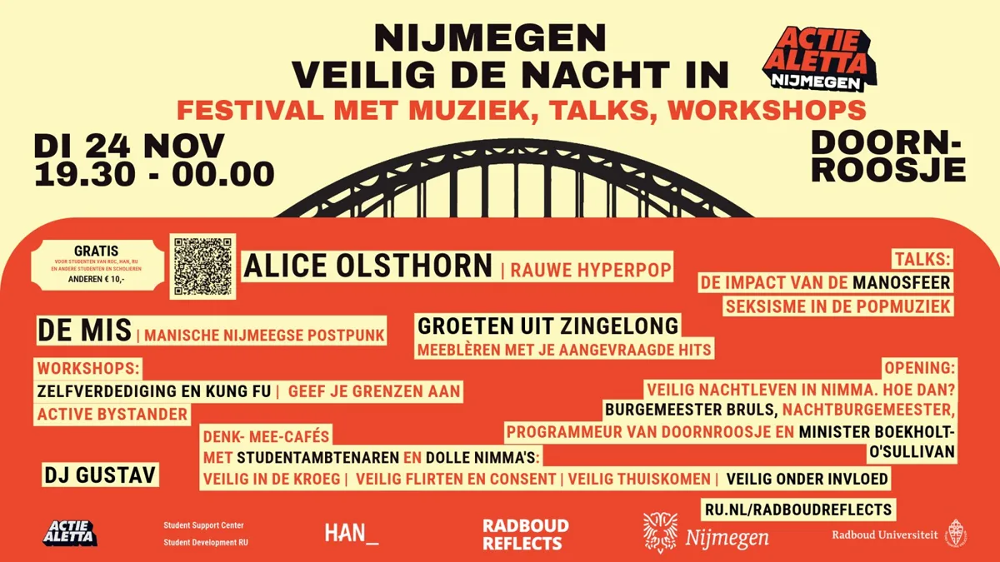
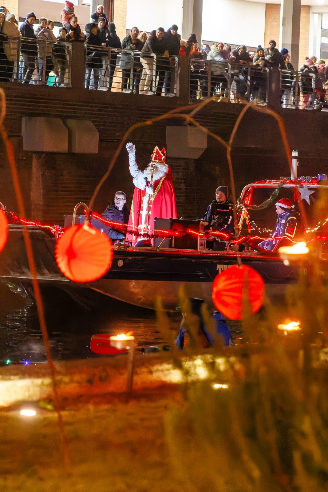
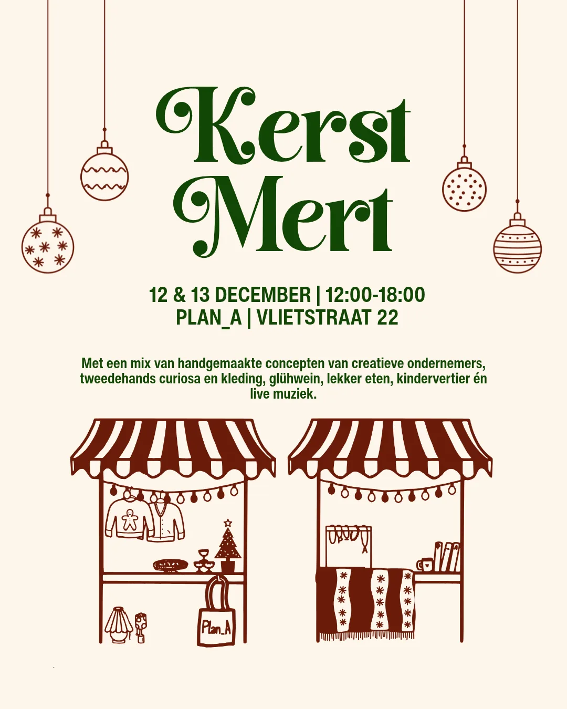
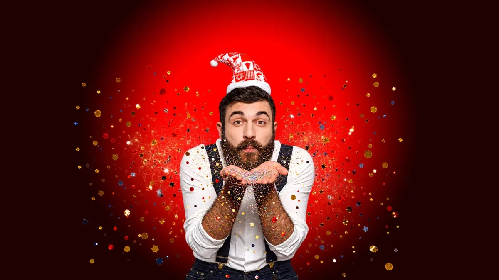

Home › Agenda
Agenda: evenementen in Nijmegen
Concerten, exposities, rondleidingen en markten in Nijmegen en de regio, ook net over de grens. Organiseer je zelf iets? Meld je evenement aan.
Uitgelicht
 Nu, t/m 4 aprWojtek! De beer die soldaat werdVrijheidsmuseum
Nu, t/m 4 aprWojtek! De beer die soldaat werdVrijheidsmuseum
 2 nov, 20.00 uurFilosofisch Cafe bij Café ’t HaantjeCafe 't Haantje
2 nov, 20.00 uurFilosofisch Cafe bij Café ’t HaantjeCafe 't Haantje
 7 nov, 21.00 uurTroost van Oost 2026 met De Triesto’sCafe 't Haantje
7 nov, 21.00 uurTroost van Oost 2026 met De Triesto’sCafe 't Haantje
 8 nov, 15.00 uurMagda Novels bij de BrauerijDe Brauerij
8 nov, 15.00 uurMagda Novels bij de BrauerijDe Brauerij
 14 nov, 20.30 uurPubquiz bij café ’t HaantjeCafe 't Haantje
14 nov, 20.30 uurPubquiz bij café ’t HaantjeCafe 't Haantje
 22 nov, 15.00 uurHilde Vos TrioDe Brauerij
22 nov, 15.00 uurHilde Vos TrioDe Brauerij
Nu te zien
Oktober 2026


November 2026
1nov Even stil staan bij de dood1 nov, 12.00 uurStevenskerk
1nov
Even stil staan bij de dood1 nov, 12.00 uurStevenskerk
1nov Open Bridge Kampioenschap 2026 Mook, Middelaar en Molenhoek1 nov, 13.00 uurDe Wieken
1nov
Open Bridge Kampioenschap 2026 Mook, Middelaar en Molenhoek1 nov, 13.00 uurDe Wieken
1nov Najaarsconcert Ensemble Sequenza ‘Van schaduw naar licht’ met Valentijn Jeukendrup1 nov, 16.00 uurLutherse kerk
2novUitgelichtFilosofisch Cafe bij Café ’t Haantje2 nov, 20.00 uurCafe 't Haantje
3nov
Najaarsconcert Ensemble Sequenza ‘Van schaduw naar licht’ met Valentijn Jeukendrup1 nov, 16.00 uurLutherse kerk
2novUitgelichtFilosofisch Cafe bij Café ’t Haantje2 nov, 20.00 uurCafe 't Haantje
3nov Krachtige collectieven3 nov, 19.30 uurThiemeloods
5nov
Krachtige collectieven3 nov, 19.30 uurThiemeloods
5nov “We the People” – 250 USA in koormuziek5 nov, 20.15 uurTitus Brandsma Gedachteniskerk
6nov
“We the People” – 250 USA in koormuziek5 nov, 20.15 uurTitus Brandsma Gedachteniskerk
6nov “Spurensuche” – Kamerconcert met strijkkwartet6 nov, 20.00 uurStadthalle Kleve
6nov
“Spurensuche” – Kamerconcert met strijkkwartet6 nov, 20.00 uurStadthalle Kleve
6nov Theatervoorstelling Buiten Bereik6 nov, 20.00 uurTheater het Badhuis Nijmegen
7novUitgelichtTroost van Oost 2026 met De Triesto’s7 nov, 21.00 uurCafe 't Haantje
7nov
Theatervoorstelling Buiten Bereik6 nov, 20.00 uurTheater het Badhuis Nijmegen
7novUitgelichtTroost van Oost 2026 met De Triesto’s7 nov, 21.00 uurCafe 't Haantje
7nov Doe Maar Lekker Disco w/ Mia’s House Of Disco – The Ultimate Disco & House Experience7 nov, 20.00 uurDe Waagh
8novUitgelichtMagda Novels bij de Brauerij8 nov, 15.00 uurDe Brauerij
8novUitgelichtPubquiz bij café ’t Haantje14 nov, 20.30 uurCafe 't Haantje
20nov
Doe Maar Lekker Disco w/ Mia’s House Of Disco – The Ultimate Disco & House Experience7 nov, 20.00 uurDe Waagh
8novUitgelichtMagda Novels bij de Brauerij8 nov, 15.00 uurDe Brauerij
8novUitgelichtPubquiz bij café ’t Haantje14 nov, 20.30 uurCafe 't Haantje
20nov “Tanz durch die Epochen” – Kamerconcert met viool en accordeon21 nov, 18.00 uurKleine Kirche
22novUitgelichtHilde Vos Trio22 nov, 15.00 uurDe Brauerij
24nov
“Tanz durch die Epochen” – Kamerconcert met viool en accordeon21 nov, 18.00 uurKleine Kirche
22novUitgelichtHilde Vos Trio22 nov, 15.00 uurDe Brauerij
24nov Kerstmarkt Klooster Graefenthal27 nov – 6 decKloster Graefenthal
28nov
Kerstmarkt Klooster Graefenthal27 nov – 6 decKloster Graefenthal
28nov UitgelichtJohnny and the Rockets28 nov, 20.30 uurCafe 't Haantje
28nov
UitgelichtJohnny and the Rockets28 nov, 20.30 uurCafe 't Haantje
28nov Wintertuinfestival28 nov, 20.00 uur
29nov
Wintertuinfestival28 nov, 20.00 uur
29nov UitgelichtStadfeest & Koopzondag: Klever Winterzauber29 nov, 13.00 uur
29nov
UitgelichtStadfeest & Koopzondag: Klever Winterzauber29 nov, 13.00 uur
29nov UitgelichtHighlight Tours in het Vrijheidsmuseum29 nov, 14.00 uurVrijheidsmuseum
UitgelichtHighlight Tours in het Vrijheidsmuseum29 nov, 14.00 uurVrijheidsmuseum
Even stil staan bij de dood1 nov, 12.00 uurStevenskerk
1novOpen Bridge Kampioenschap 2026 Mook, Middelaar en Molenhoek1 nov, 13.00 uurDe Wieken
1novNajaarsconcert Ensemble Sequenza ‘Van schaduw naar licht’ met Valentijn Jeukendrup1 nov, 16.00 uurLutherse kerk
2novUitgelichtFilosofisch Cafe bij Café ’t Haantje2 nov, 20.00 uurCafe 't Haantje
3novKrachtige collectieven3 nov, 19.30 uurThiemeloods
5nov“We the People” – 250 USA in koormuziek5 nov, 20.15 uurTitus Brandsma Gedachteniskerk
6nov“Spurensuche” – Kamerconcert met strijkkwartet6 nov, 20.00 uurStadthalle Kleve
6novTheatervoorstelling Buiten Bereik6 nov, 20.00 uurTheater het Badhuis Nijmegen
7novUitgelichtTroost van Oost 2026 met De Triesto’s7 nov, 21.00 uurCafe 't Haantje
7novDoe Maar Lekker Disco w/ Mia’s House Of Disco – The Ultimate Disco & House Experience7 nov, 20.00 uurDe Waagh
8novUitgelichtMagda Novels bij de Brauerij8 nov, 15.00 uurDe Brauerij
8nov
Herdenking Kristallnacht in het Vrijheidsmuseum8 nov, 11.00 uurVrijheidsmuseum 14novUitgelichtPubquiz bij café ’t Haantje14 nov, 20.30 uurCafe 't Haantje
20nov
Parkinson Café Nijmegen20 nov, 12.00 uurWijkcentrum Hatert 21nov
De wereld is klein21 nov, 17.30 uurBrebl 21nov“Tanz durch die Epochen” – Kamerconcert met viool en accordeon21 nov, 18.00 uurKleine Kirche
22novUitgelichtHilde Vos Trio22 nov, 15.00 uurDe Brauerij
24nov
Nijmegen veilig de nacht in - Actie Aletta24 nov, 17.30 uurDoornroosje 27novKerstmarkt Klooster Graefenthal27 nov – 6 decKloster Graefenthal
28novUitgelichtJohnny and the Rockets28 nov, 20.30 uurCafe 't Haantje
28novWintertuinfestival28 nov, 20.00 uur
29novUitgelichtStadfeest & Koopzondag: Klever Winterzauber29 nov, 13.00 uur
29novUitgelichtHighlight Tours in het Vrijheidsmuseum29 nov, 14.00 uurVrijheidsmuseum
December 2026
4dec UitgelichtLotte Walda bij de Brauerij6 dec, 15.00 uurDe Brauerij
12dec
UitgelichtLotte Walda bij de Brauerij6 dec, 15.00 uurDe Brauerij
12dec UitgelichtGuy Verlinde bij de Brauerij13 dec, 15.00 uurDe Brauerij
26dec
UitgelichtGuy Verlinde bij de Brauerij13 dec, 15.00 uurDe Brauerij
26dec UitgelichtHighlight Tours in het Vrijheidsmuseum27 dec, 14.00 uurVrijheidsmuseum
UitgelichtHighlight Tours in het Vrijheidsmuseum27 dec, 14.00 uurVrijheidsmuseum

Sinterklaas komt over het water4 dec, 15.15 uurBinnenstad 6decUitgelichtLotte Walda bij de Brauerij6 dec, 15.00 uurDe Brauerij
12dec
KerstMert!12 dec – 13 decPlan_A 13decUitgelichtGuy Verlinde bij de Brauerij13 dec, 15.00 uurDe Brauerij
26dec
IN EXTASE – Gay dansfeest voor mannen 30+26 dec – 27 decDe Witte Raaf 27decUitgelichtHighlight Tours in het Vrijheidsmuseum27 dec, 14.00 uurVrijheidsmuseum